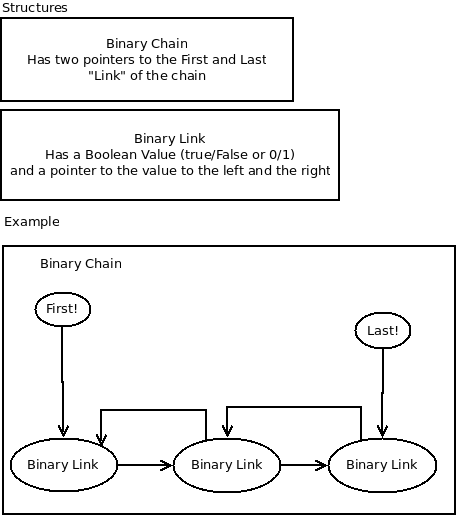

In the search of Mersenne prime numbers we need to work with big amount of data, those are big numbers! those prime numbers are made with the formula (2n)-1, and in the informatic world the limit of a integer value es 2.147.483.647 (wich is the 8° mersenne's prime), so, we can't use regular variables, thus we can't use integer or float variables.
It will be created a structure binary (are faster in big computations) to adapt is grow in dynamic form, and also create is basic operations add, rest, multiplication, division, power and module; and finally a conversor from this tipe of binary data to decimal data.
this web site will be write like a blog, from down(latest) to up(newest), so, time in time, i can read thoughts and ideas that i have from this.
Date: 2017-06-04
Ok, since the last entrance, we have the ability to generate the number to analyze; but we need the ability to generate the possible divisors of that number.
A few considerations:
As you can se, every mersenne number is odd (because is formula 2n - 1), implies, that every possible divisor has to be odd to (try to divide an odd number with a even number will always be inexact).
so, in conclusion, we generate mersenne number with: 2n - 1
and analize with number generate with: 2m-1 with this number less than less than an one third of the number to analize.
if P is the prime to analyze. from 3 to M the maximum number possible that could be divisor is: P/3.
so, from 3, going up 2 in 2 to M, is needed:
2n-1=3(2m-1)
2n-1=6m-3
2n+2=6m
m=(2n+2)/6
in conclusion, why this was necessary? with this calculation, is possible to determine the amount of number than is necessary to try as divisor.
in a cicle of M times, testing from "i=2" to M, with the formula 2i-1, all that number is necesary to test as divisor.
This amount is extremly far reduced than test all the posible numbers betwen 2 to P.
the problem here (really thinking out loud), is calculate that formula in binary. Still remains to do the basic operations/functions in binary.
Date: 2017-06-01
added two more functions in the repo, that allows to add a binary state (bool true/false) to the extremes of a chain, why this function is necessary? allows to create more faster a mersenne number.(and then evaluate if is prime)
| Number |
Binary |
| 1 | 0000001 |
| 3 | 0000011 |
| 7 | 0000111 |
| 15 | 0001111 |
| 31 | 0011111 |
| 63 | 0111111 |
| 127 | 1111111 |
in order to generate the 127 form a decimal base, is necessary calculate 2 7 - 1 (an exponential calculation) or realize a "for" cycle multiplying for 2 each lap. in bigger numbers this could be really slow process.
To generate 127 in binary form, i just need to add seven 1 (seven true boolean states) side to side(preferely from left to right).
Date: 2017-05-31
by the moment, the function to create and add "plus one" already been made, to do all the rest of operation. and by the moment nothing of the algorithm of search.
| code |
| using namespace std; |
| struct binaryLink{ |
| bool value; |
| binaryLink *next; // to the left, |
| binaryLink *prev; // to the right; |
| }; |
| struct binaryChain{ |
| binaryLink *first; //to the left! |
| binaryLink *last; // to the right! |
| }; |
A diagram to see this code could be:

This two way link allows me to move around the chain without use recursive functions (with long long recursive functions the system is compromised).
So, to print, just move from left to right. to add one number or sum, i move from right to left.